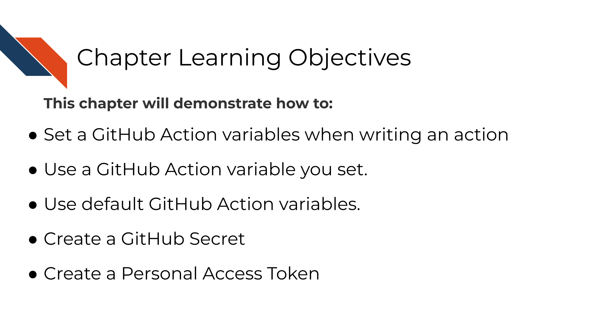
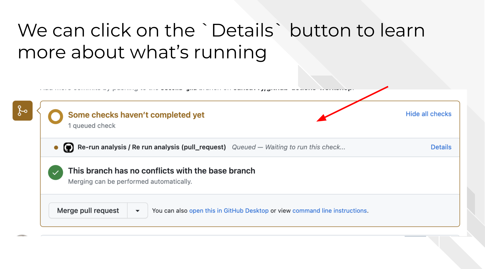
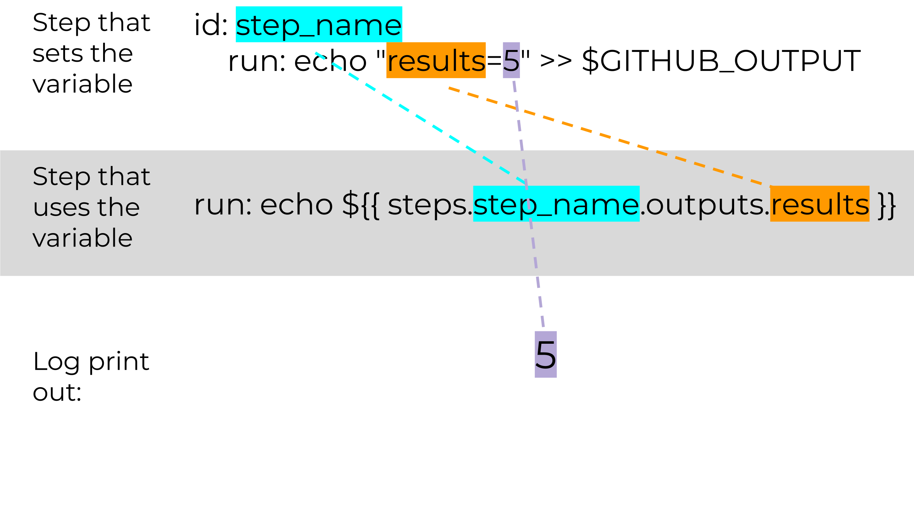
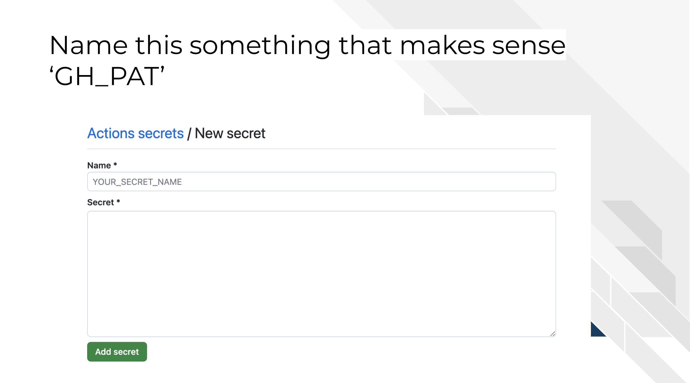
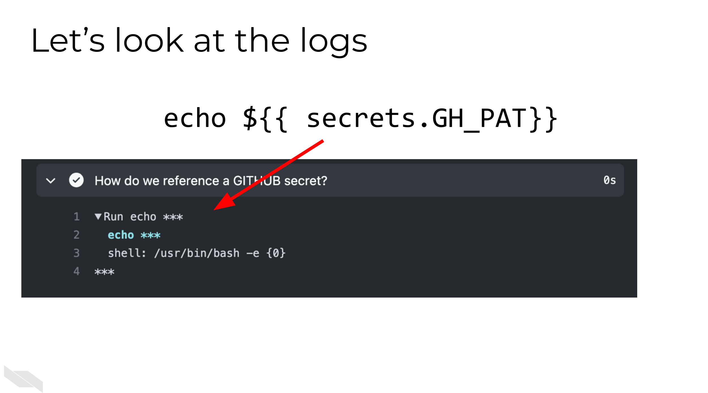

Chapter 6 GitHub Action Variables

The GitHub Actions environments have variables that are already set by default in the environment but you can also set environment variables yourself.
6.0.1 Types of variables
There are two types of variables in GitHub Actions.
Default- Ones GitHub already sets for you.User set- Ones you set yourself.
To print things out, you can use this kind of notation in bash or other contexts in the yaml file.
echo ${{ github.repository }}In this next exercise we’ll explore different ways to use variables.
6.1 Exercise 3 - Exploring Variables
For this exercise, we are going to continue to use the example repository that we set up in the previous chapter.
- Create a new branch to work from.
 From command line:
From command line:
`git checkout -b "env-var"`- For this exercise we are going to copy over another GHA yaml to explore. This time, move the
exploring-var-and-secrets.ymlfile to your.github/workflowsdirectories you made in the previous chapter.
 From command line:
From command line:
mv activity-1-sample-github-actions/exploring-var-and-secrets.yml .github/workflows/exploring-var-and-secrets.yml- Now follow the same set of steps we used in the previous chapter to Add, Commit, Push the changes.
 From command line:
From command line:
git add .github/*
git commit -m "exploring gha variables"
git push --set-upstream origin env-varNow create a pull request with the changes you just made. (Refer to the previous chapter if you need reminders on how to do this).
On your pull request page on GitHub, click on the
Detailsbutton next to your workflow run. Keep this handy because we will dive into the details of what we just ran.

6.1.1 Default variables
You can read the latest documentation about GitHub Action default variables here. But here’s some highlights.
| name | example output | explanation |
|---|---|---|
| GITHUB_REPOSITORY | username/repository_name | This prints out what repo this is run from |
| GITHUB_REF | refs/pull/1/merge | The branch or tag that triggered this workflow. But note that this will be blank if the trigger is not based or related to branches or tags. For example a workflow_dispatch wouldn’t have this |
| GITHUB_ACTOR | cansavvy | The GitHub handle of the person who caused this workflow to run |
Below shows an example of the log of the where we printed out these default GitHub variables.

6.1.2 User set variables
6.1.2.1 env:
There are different ways to set variables. The simplest way to set variables is within a step you can set them using env:. Underneath env: you write the name of the variable on one side of the colon and then the definition on the other side. For example, in our yaml file we had:
- name: Hello, but make it personal
run: echo "Hello $First_Name."
env:
First_Name: CandaceThis set up printed out Hello Candace in the logs as our output.
This might be useful, but if we want an environmental variable to be stored and retrieved between steps we’ll need to use something different.
6.1.2.2 Setting output variables
If we’d like one step to be able to retrieve information from another step we’ll need to send a variable to the GITHUB_OUTPUT.
To do this we can use this sort of set up:

Step that sets a variable depending on some output
# How to export a variable to a next step
- name: Setting output to the environment at large
id: step_name
run: echo "results=5" >> $GITHUB_OUTPUTHere we are naming the variable results and the notation >> $GITHUB_OUTPUT is always there.
In this example, results is only set equal to 5 but you could see how this might be made to be more complicated. Like perhaps the results are a bash command output like:
"time=$(date +'%Y-%m-%d')" >> $GITHUB_OUTPUTThis would allow us to have a time stamp of when this step was run.
Or perhaps we are running a script that outputs a result:
results=$(Rscript utils/script.R)6.1.2.3 Using output variables
To use this output variable in a subsequent step we have to use this kind of setup:
steps.step_name.outputs.results where step_name is the id: we set for the step that set this variable (see above) and results is the name of the variable we set. And, as is typical we need the ${{ }} notation.
# How to print out the variable we just saved
- name: Print out that variable in a later step
run: echo ${{ steps.step_name.outputs.results > 3 }}This is nifty because now we can use the result of one step to determine whether or not we run a subsequent step. GitHub Action steps can have conditional or if statements.
Maybe we only want a step to run if the result is something specific:
- name: Conditional step
# Here we are only going to do this step if the results from the previous step are bigger than 3
if: ${{ steps.step_name.outputs.results > 3 }}
run: echo 'the results are greater than 3!'Or, maybe we want to make sure the whole workflow shuts down if a variable is something in particular like this example below.
- name: Shut it down
# Here we are only going to do this step if the results from the previous step are bigger than 3
if: ${{ steps.step_name.outputs.results =< 3 }}
run: |
echo 'the results are less than or equal to 3! -- going to exit!'
exit 1
6.1.2.4 Setting and grabbing secrets
What if the string or variable we need is not something we can supply in the YAML itself? Perhaps we have credentials or something that cannot be shared publicly but that we need it to complete our steps. That’s where GitHub secrets come in handy!
Read more about GitHub secrets here..
One very common type of GitHub secret you may need to add is a GitHub Personal Access Token (sometimes abbreviated PAT). A personal access token is a string set that, when provided, gives access to a user’s GitHub account. Read more about tokens here.
For GitHub actions that are doing things that require authorization or particular permissions levels, you will need to provide your GitHub action with your personal access token (PAT) that you store as a GitHub secret.
6.1.3 Activity: Setting GitHub secrets
Let’s practice this by setting a GitHub Access token as a secret!
6.1.3.1 Make a Personal Access token
You can store any alphanumeric string as your GitHub secret. It may be an API key or authorization keys from some other software program. But for this example, we will use an authorization key for GitHub.
Recall we have may have to give authorization to a GitHub action some times, because we are not actually running this with our user account, this job is being sent to GitHub for them to run on their servers somewhere.
- First make your own personal access token by going here: https://github.com/settings/tokens You can find this page by going to your own profile, and then to
SettingsandDeveloper settings.
The GitHub Documentation for how to make PATs is here: https://docs.github.com/en/authentication/keeping-your-account-and-data-secure/managing-your-personal-access-tokens But we’ll walk through it together now.
Underneath
Tokens (classic)clickGenerate new tokenand pickGenerate new token (classic). You will likely have to enter your password at this point.Underneath
Notewrite something that will remind you about where you are using this PAT. Check therepoworkflow. (Depending on what you are trying to do you may have to check other boxes but for a lot of the permissions you’ll needrepowill do).Scroll to the bottom of the page and click
Generate. Your token will be shown on the next page. You’ll keep this handy because they won’t show it to you again. Be careful not to share this any place publicly because it will give someone authorization to you GitHub account!
6.1.3.2 Creating a GitHub Secret
- Return to your repository that we were using for these activities.
Settings>Secrets and variables>Actions>New Repository Secret.- Name your secret something. In this example, let’s call it
GH_PAT. You’ll want to name your secret something that relates to what it is. - Now copy and paste in the secret section.

6.1.3.2.1 Referencing a GitHub secret in a GitHub action
To retrieve a GitHub secret amidst a GitHub Action workflow run, you do this sort of notation: ${{ secrets.SECRET_NAME}} Where SECRET_NAME directly is the name you used for your GitHub secret.
# Here's how we'd reference a secret
- name: How do we reference a GITHUB secret?
run: ${ secrets.SECRET_NAME }In the previous step we named our secret GH_PAT so if we needed to use it in our workflow we would use ${ secrets.GH_PAT }.
Perhaps at this point you are worried that your logs may accidentally display your GitHub secret if you did something like:
run: echo ${ secrets.GH_PAT }But, you don’t have to worry about that part, in your logs your secrets will show as *** and will not be displayed.
6.1.3.2.2 Activity: Using a GitHub secret
- On your repository, go to your
01-exploring-var-and-secrets.ymlfile from your working branch. - Click the
edit this filebutton. - Scroll to the bottom. Uncomment the last step step. It should look like this:
# Here's how we'd reference a secret
- name: How do we reference a GITHUB secret?
run: ${ secrets.SECRET_NAME }- Replace
SECRET_NAMEwith what you named your secret (probablyGH_PAT). - Commit that change to your file.
- Push that change to your file.
- Take a look at the log by clicking
Details.

What you should see is that the workflow runs again, tries to print the GitHub secret out but really just shows a ***.